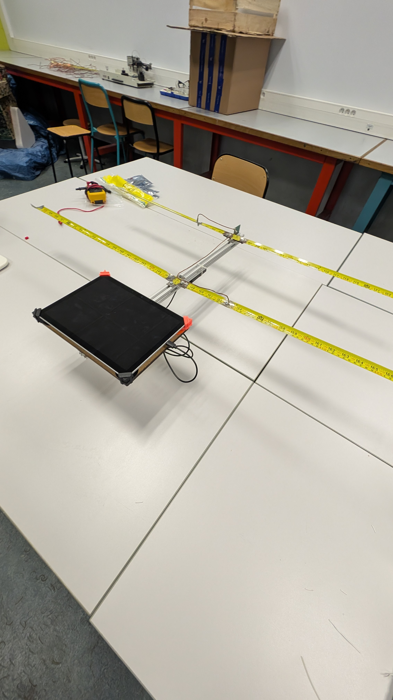
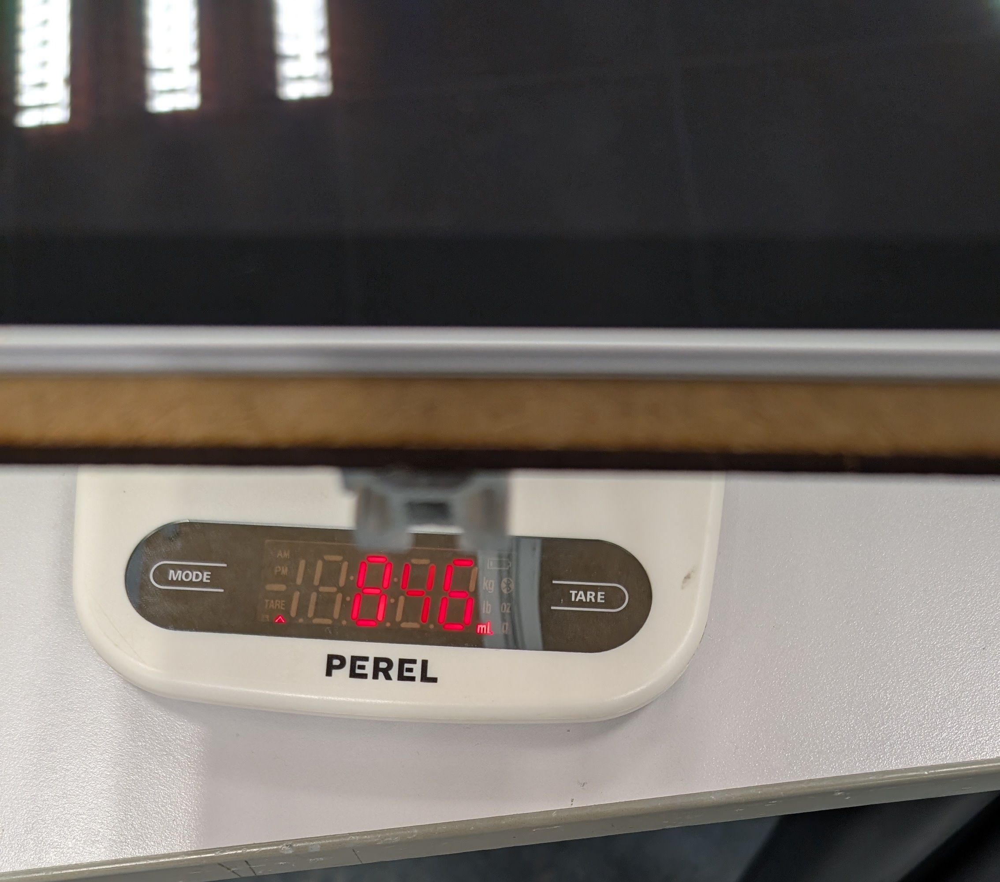
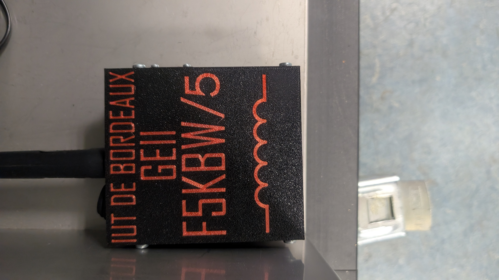

Chasse aux Balises
Projet Ensemble PV
Fabrication d'une antenne et localisation de balises cachées.

Fabrication d'une antenne et localisation de balises cachées.
Le but de ce projet "Ensemble PV" (Chasse aux balises) est de fabriquer une antenne pour trouver des balises qui sont cachées sur tout le site de l'université.
Nous avons dû marcher sur plusieurs kilomètres pour trouver, à l'aide de nos antennes, l'emplacement des balises qui émettaient à une fréquence de 144 MHz.
Partie dédiée à la conception mécanique, électronique et radiofréquence de l'antenne réceptrice HB9CV, taillée pour la fréquence de 144 MHz.

Schéma simplifié de l'antenne

Architecture électronique

Abaque de Smith - transmission

Vue 3D du rayonnement de l'antenne
Cette partie présente les étapes de fabrication et d'assemblage de l'antenne : réalisation de la structure, ajout des composants et ajustements matériels.

Fabrication de l'antenne

Ajout du condensateur
Phase de tests et validation des choix de conception, vérification du bon fonctionnement de la réception du signal à 144 MHz lors de la recherche des balises réelles.

Mesure de la masse de l'antenne

Diagramme de rayonnement sur uSimmics
Quelques images prises pendant la recherche des balises sur le terrain.

Balises utilisées pendant la chasse

Balise 3 trouvée

Balise 5 trouvée